Non-maximum suppression
Our implementation of non-maximum suppression is based on morphological gray-scale dilation [1] defined by the formula
| 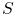 |
where  is the filtered image, 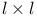 is a structuring element, and
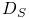 is the domain of . Gray-scale dilation is a more general
approach than the method of detection of local intensity maxima,
because the structuring element can have an arbitrary form.
is the filtered image, 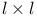 is a structuring element, and
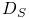 is the domain of . Gray-scale dilation is a more general
approach than the method of detection of local intensity maxima,
because the structuring element can have an arbitrary form.
We first perform a gray-scale dilation of the filtered image  using a structuring element of size 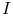 with all entries
set to zero, where 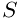, and 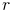 is a dilation radius given
by the user. The approximate molecular positions are extracted by
finding pixels in the image
using a structuring element of size 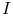 with all entries
set to zero, where 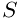, and 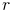 is a dilation radius given
by the user. The approximate molecular positions are extracted by
finding pixels in the image  that have intensities equal to corresponding
pixels in the dilated image and also have an intensity greater than
a user-specified threshold. Essentially, a
binary image is built with all non-maximum pixels set to zero and
with all local maxima set to one.
that have intensities equal to corresponding
pixels in the dilated image and also have an intensity greater than
a user-specified threshold. Essentially, a
binary image is built with all non-maximum pixels set to zero and
with all local maxima set to one.
References
- [1] (2007) Image Processing, Analysis, and Machine Vision. 3rd edition edition, Cengage Learning. Cited by: Non-maximum suppression.
![[LOGO]]()